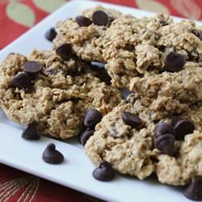

Chocolate chip breakfast cookies

Low-fat, high-fiber, a great alternative to pre-packaged oatmeal snacks!
They make a great breakfast on-the-go or mid-morning snack. Store in an airtight container or the freezer.
Ingredients
- 4 cups quick-cooking oats4 cups quick-cooking oats
- 1 cup all-purpose flour
- 1 cup whole wheat flour1 cup whole wheat flour
- 2 teaspoons baking powder
- ¼ cup butter, room temperature¼ cup butter, room temperature
- 2 large eggs2 large eggs
Steps
- Preheat the oven to 350 degrees F (175 degrees C). Line a baking sheet with parchment paper.
- Stir oats, all-purpose flour, whole wheat flour, baking powder, salt, and baking soda together in a bowl.
- Beat white sugar, brown sugar, and butter together in a large bowl using an electric mixer until fluffy. Beat in eggs, applesauce, and vanilla extract in that order. Stir in the oat-flour mixture until dough is just combined. Stir in chocolate chips.
- Drop 1/4 cup of the dough onto the prepared baking sheet. Repeat with the remaining dough, flattening each cookie slightly.Drop 1/4 cup of the dough onto the prepared baking sheet. Repeat with the remaining dough, flattening each cookie slightly.
- Bake in the preheated oven until light brown at the edges, 12 to 15 minutes. Let cool on the baking sheet, 3 to 4 minutes. Transfer cookies to a wire rack to cool completely.
Return to main page